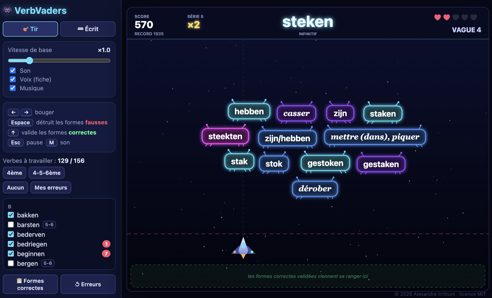

👾
VerbVaders
Un jeu d'arcade type Space Invaders pour aider un·e élève de l'enseignement secondaire belge à apprendre les temps primitifs des verbes irréguliers néerlandais.
▶ JouerSe joue au clavier, sur ordinateur.

Deux modes de jeu
🎯 Tir
Les formes du verbe descendent mêlées à des pièges : on détruit les fausses au canon (Espace) et on valide les correctes au rayon (↑).
⌨️ Écrit
On tape chaque forme au clavier (prétérit, prétérit pluriel, auxiliaire, participe passé) puis on choisit la traduction parmi trois propositions.